This site is dedicated to all Swifties at heart! Know everything about Taylor Swift and her beginnings!
Taylor's Baby Pictures
A collection of Taylor's photos when she was still a baby. On December 13, 1989, Taylor Alison Swift was born at the Reading Hospital in West Reading, Pennsylvania. (Source: Wikipedia )
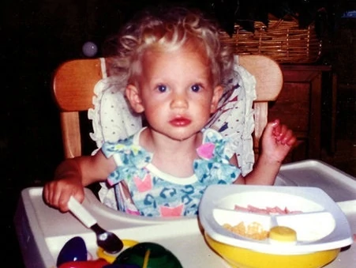
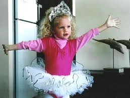
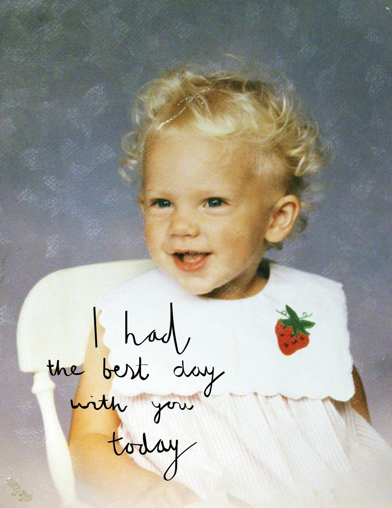
Taylor's Primary School Pictures
A collection of Taylor's photos when she was in Primary School. She first attended the Bernadine Franciscan nuns' Alvernia Montessori School for preschool and kindergarten before moving to The Wyndcroft School. (Source: Wikipedia )
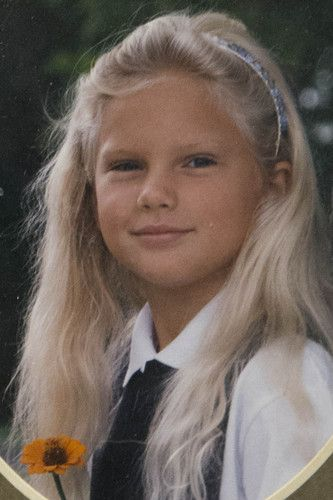
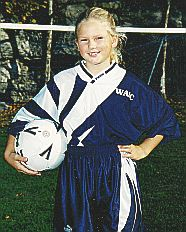
Taylor's High School Pictures
A collection of Taylor's photos when she was in High School. She attended Wyomissing Area Junior/Senior High School after the family relocated to a rented home in the Pennsylvania suburb of Wyomissing. (Source: Wikipedia )
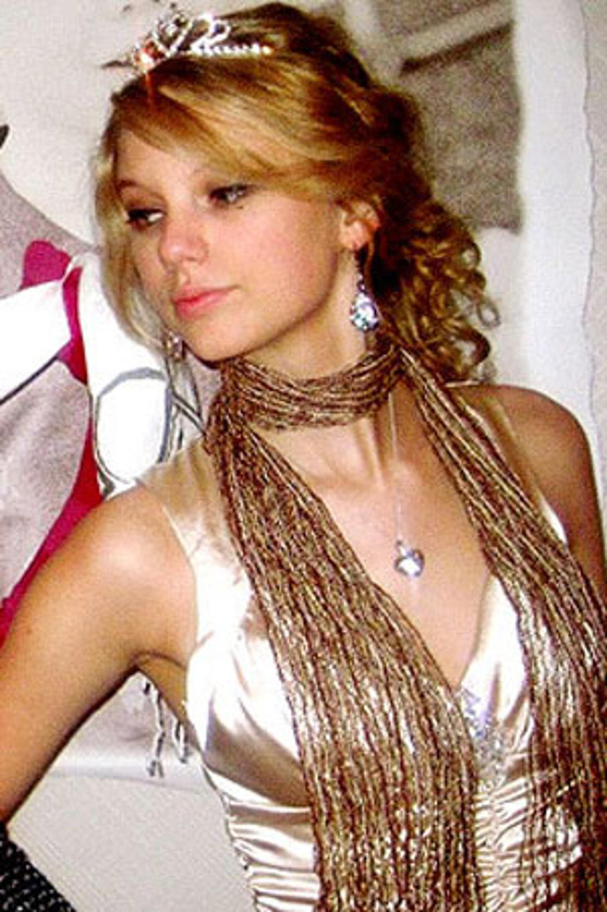
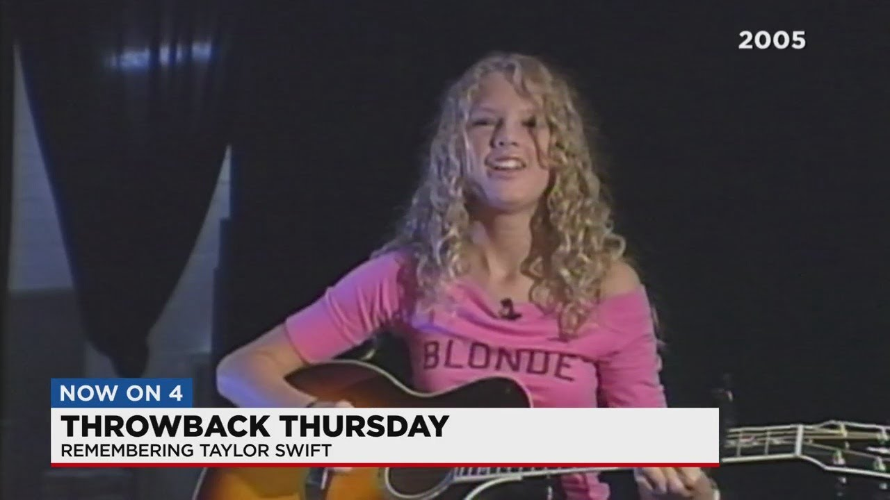
Taylor's Family Pictures
A collection of Taylor's Family photos. Her mother, Andrea Gardner Swift (née Finlay), was a former homemaker who worked as a mutual fund marketing executive before becoming her father, Scott Kingsley Swift, a former stockbroker at Merrill Lynch. Austin, her younger brother, is an actor. (Source: Wikipedia )
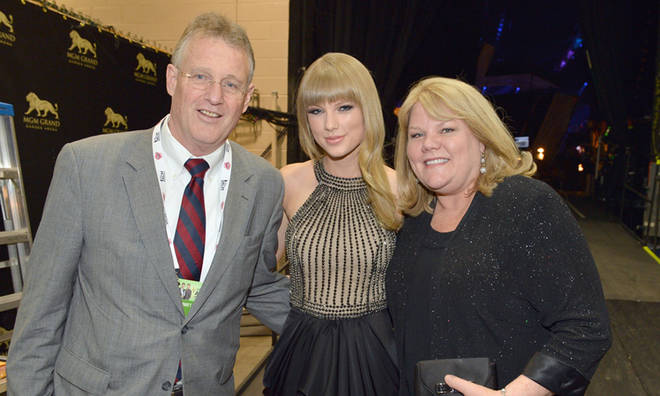
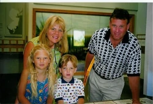
Taylor's Pet Pictures
A collection of Taylor's photos with her pets. Taylor likes cats and dogs and loves spending time with them. (Source: Cosmopolitan.com )
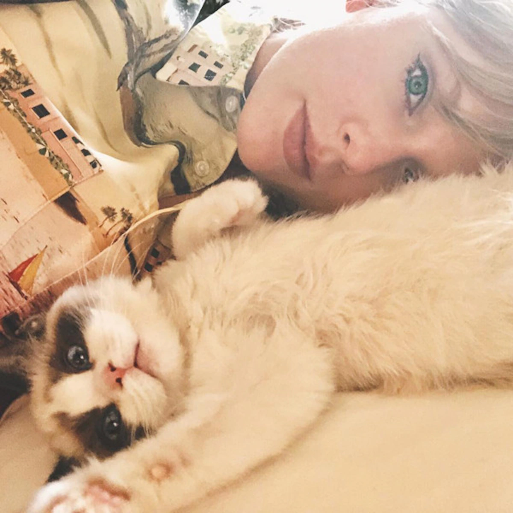
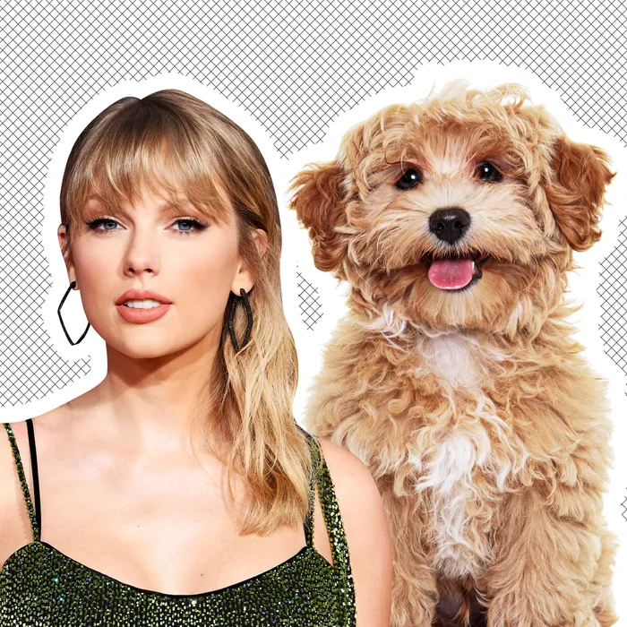
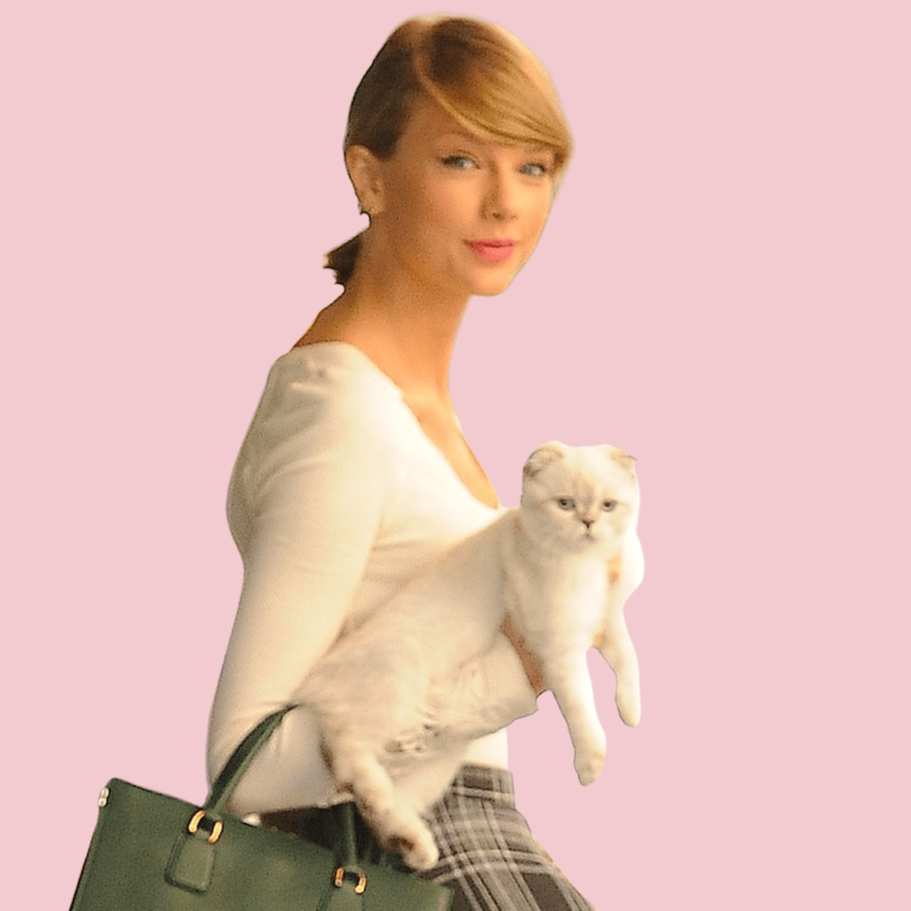
Taylor's Award Pictures
A collection of Taylor's photos with her awards. Among other honours, she has won 58 Guinness World Records, an Emmy Award, 34 American Music Awards (the most for an artist), 29 Billboard Music Awards (the most for a woman), and 11 Grammy Awards, including three Album of the Year triumphs. (Source: Wikipedia )
Taylor's Live Performances Pictures
A collection of Taylor's photos with her live performances.Taylor Swift has headlined five tour runs, three special events, 21 music festivals, and 197 live performances. (Source: Wikipedia )
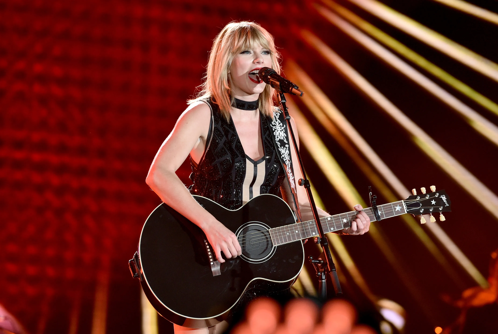
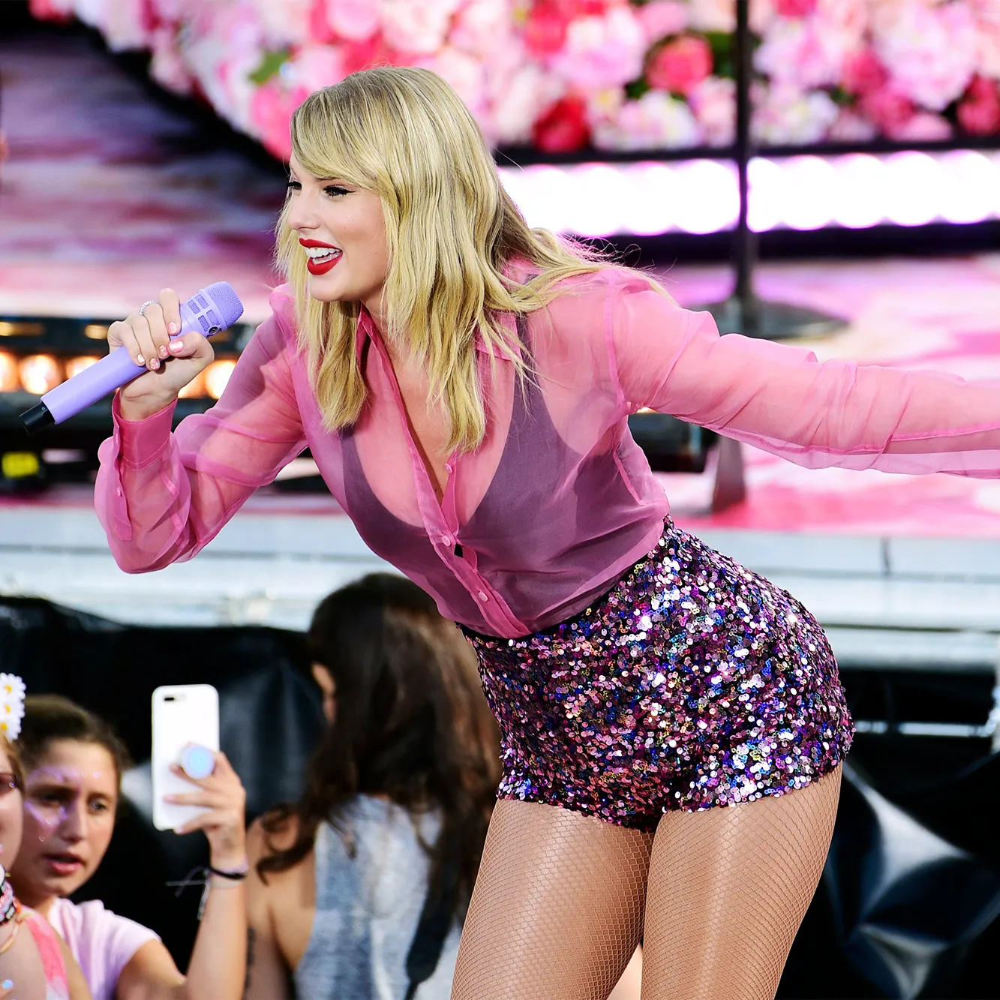
Taylor's Album Pictures
A collection of Taylor's Studio Album photos. 9 original studio albums, 2 re-recorded studio albums, 5 extended plays (EP), 3 live albums, and 14 compilations have all been published by Taylor Swift. She is one of the best-selling musicians and is thought to have sold 114 million album sales globally. (Source: Wikipedia )